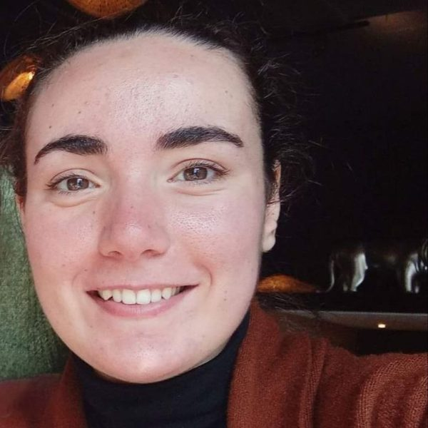

Du B2 au C1
Acadécrit
écrire à l'université
Bienvenue ! Tu étudies à l'université et tu dois écrire en français : une synthèse, un rapport de stage, un mémoire… Acadécrit t'accompagne pas à pas. Ici, tu apprends à écrire en faisant, en observant et en révisant.
Présentation du blog
Trois espaces pour écrire
- Le cours : tu t'entraînes à la synthèse de documents, de la lecture des deux textes jusqu'à l'autoévaluation.
- L'autonomie : tu prépares ton rapport de stage ou ton mémoire de recherche avec un tutoriel vidéo, un corpus d'écrits authentiques et une grille de relecture.
- Les échanges : tu déposes tes travaux, tu poses tes questions, tu discutes avec les autres étudiants et avec nous.
Notre objectif
Devenir autonome à l'écrit
Nous voulons t'aider à construire tes propres stratégies d'écriture, et pas seulement à recopier des modèles. Avec Acadécrit, tu vas :
- comprendre ce qu'on attend de toi dans les écrits universitaires ;
- sélectionner, organiser et reformuler les idées ;
- repérer les formules du discours académique dans un corpus ;
- relire et réviser ton propre texte avec des outils (Scribens, Compilatio, grilles).
Qui sommes-nous ?
Trois enseignantes à tes côtés
Nous sommes Hiba AZZOUZ, Manel LAFRI et Asma FEDALI, enseignantes et conceptrices de ce parcours.
À travers ce blog, nous avons voulu créer un espace dans lequel tu peux apprendre à écrire en faisant, en observant et en révisant. Notre rôle n'est pas de te donner simplement des modèles à reproduire, mais de t'accompagner dans ta démarche afin que tu puisses progressivement développer tes propres stratégies d'écriture et devenir plus autonome.
-
Hiba AZZOUZ
Je suis Hiba, enseignante de FLE et étudiante en Master 2 à l’Université d’Artois. Depuis mes débuts dans l’enseignement, les langues sont pour moi bien plus que des mots : elles sont des ponts entre les cultures et les personnes. Curieuse et passionnée de pédagogie, j’aime imaginer, créer et partager des expériences d’apprentissage qui donnent envie d’apprendre le français autrement !
-

Manel LAFRI
Je suis Manel, enseignante de français . À travers ce blog, je souhaite partager des outils et des activités pour vous accompagner dans vos écrits universitaires, avec une approche simple, progressive et interactive.
-
Asma FEDALI
Je m’appelle Asma je suis enseignante de FLE passionnée par les langues et les échanges culturels. Mes expériences dans l’enseignement m’ont permis de découvrir la richesse de ce métier. J’aime transmettre, partager et rendre l’apprentissage du français vivant et accessible à tous !
À qui s'adresse ce blog ?
Pour toi, étudiant·e à l'université
Ce blog s'adresse principalement aux étudiants universitaires, notamment aux étudiants internationaux et aux étudiants qui souhaitent renforcer leur maîtrise du français écrit dans un contexte académique.
Il peut t'être particulièrement utile si tu dois :
- rédiger un rapport de stage ;
- réaliser un mémoire de recherche ;
- produire une synthèse de documents ;
- prendre et organiser des notes à partir de documents universitaires ;
- améliorer la cohérence et la précision de tes écrits ;
- apprendre à relire et réviser ton propre texte.
Le cours
La synthèse de documents, en quatre étapes
-
1
Je comprends les deux textes
QCM, vrai ou faux, tableaux, appariements et textes à trous, corrigés tout de suite.
-
2
J'apprends la démarche
Ce qu'est (et n'est pas) une synthèse, une boîte à outils de connecteurs, un tableau de confrontation, puis ton plan.
-
3
Je rédige
Tu écris ta synthèse dans la page, puis tu la vérifies avec Scribens (la langue) et Compilatio (la reformulation).
-
4
Je m'autoévalue
Tu te notes critère par critère. Le site fait le total et te donne un conseil.
Autonomie
Le rapport de stage et le mémoire de recherche
Pour chaque écrit, tu regardes d'abord un tutoriel vidéo, tu explores un corpus d'écrits réels, tu suis les étapes de rédaction, puis tu relis ton texte avec une grille d'autoévaluation.
Mode d'emploi
Personne ne corrige à votre place ici : c'est vous qui vérifiez, comparez et vous notez. Voici comment vous y prendre. Lire le mode d'emploi complet
ACTIVITÉS
Répondez, cliquez sur Vérifier, puis lisez la rétroaction même quand c'est juste : elle explique pourquoi.
RÉDACTION
Copiez votre synthèse dans Scribens et corrigez les fautes signalées avant de passer à la grille.
AUTOÉVALUATION
Relisez votre texte une fois par critère. Soyez sévère : une note honnête vous dit quoi retravailler.